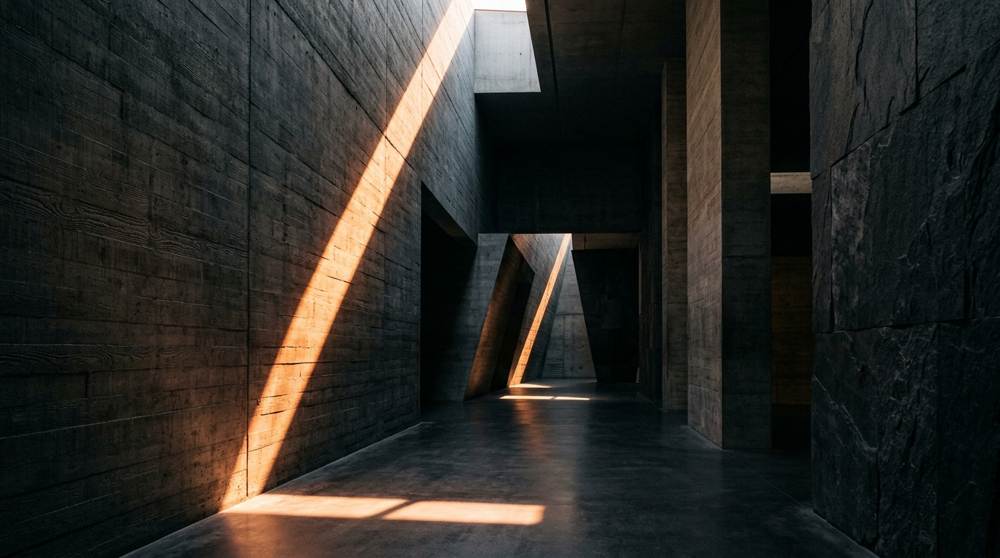

16 位 ACR 通透影调，冷解码提速 67.4%。
C++ 内存管线直接交付带 Associated Alpha 的 RGBA16 位图，彻底告别临时磁盘 I/O。注入对标 Camera Raw 的 16 位 S 型色调映射，压实暗部黑位、消除浮灰，RAW 冷解码由 13.81 秒缩减至 4.50 秒。
LibRaw 0.21.4 · 零磁盘 I/O · ΔL* +0.1 / ΔC* +0.3
